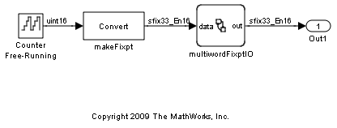
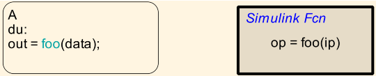
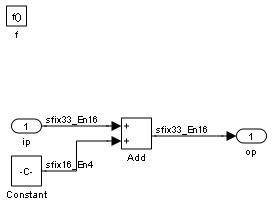

Using Multiword Fixed-point Data
This demo showcases a simple use of multiword fixed-point data in Stateflow charts. Starting from R2010a, you can define multiword fixed-point data at the chart level, with one of the following scopes:
- Input
- Output
- Parameter
- Data Store Memory
You can also pass these data as inputs and outputs to and from Embedded MATLAB functions, Embedded MATLAB truth tables and Simulink functions in Stateflow charts.
Chart multiwordFixptIO takes in an input, data, that is a multiword fixed-point type, and returns an output, out, that is also a multiword fixed-point data type.
The chart defines a Simulink function foo that declares both its input and output to be of multiword fixed-point type. foo returns the value of its input, incremented by a fixed-point constant value. At each time step, chart multiwordFixptIO passes its input to foo, and assigns foo's output to out.
